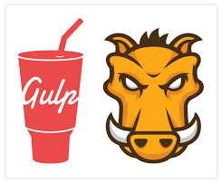

Automatização de Tarefas

Quando estamos desenvolvendo é comum precisarmos realizar certas operações para melhorar o nosso código.
Um exemplo é minificar o nosso código, fazendo com que os arquivos fiquem menores, o que faz a aplicação ser carregada mais rapidamente pelo navegador.
Outras tarefas podem ser a execução de testes de qualidade, como o JSLint, ou testes de software, como o Jasmine.
Para nos auxiliar temos os automatizadores de tarefas. Os mais famosos são o Grunt e o Gulp. Podemos definir qualquer tarefa e pedir para que estas ferramentas as executem para nós.
Imagine que quando salvamos um arquivo, ele deve ser testado pelo Jasmine, analisado pelo JSLint e, se todos os testes passarem, iremos minificar o arquivo.
E mais! Podemos querer também que se tudo der certo, ele envie um E-mail para o nosso cliente dizendo que em breve iremos lançar uma nova versão da nossa aplicação!
Eles nos ajudam a automatizar o que quisermos, o limite é sua imaginação!